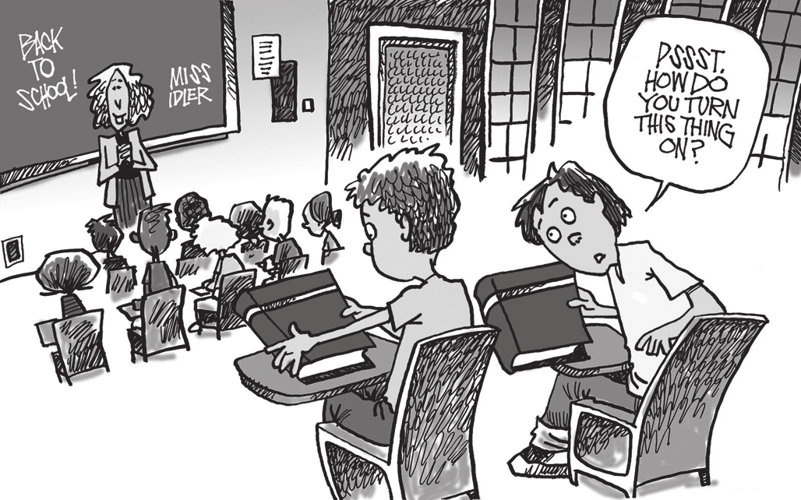

KEEFER, M. Disponível em: www.nj.com. Acesso em: 3 dez. 2018.
No cartum, o estudante faz uma pergunta usando
turn this thing on
por
suspeitar que o colega está com seu material por engano.
duvidar que o colega possa se tornar um bom aluno.
desconfiar que o livro levado é de outra matéria.
entender como desligada a postura do colega.
desconhecer como usar um livro impresso
NÃO TEM IDEIA?